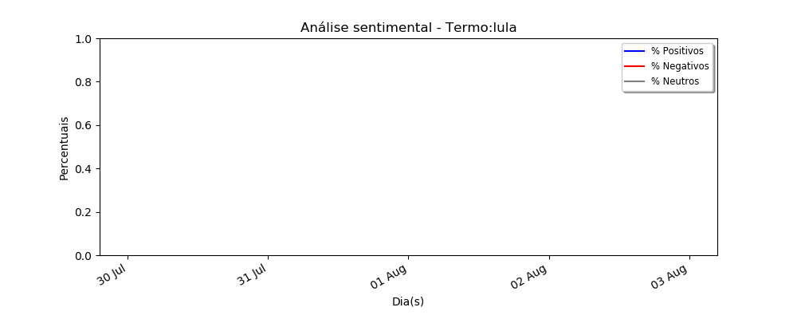
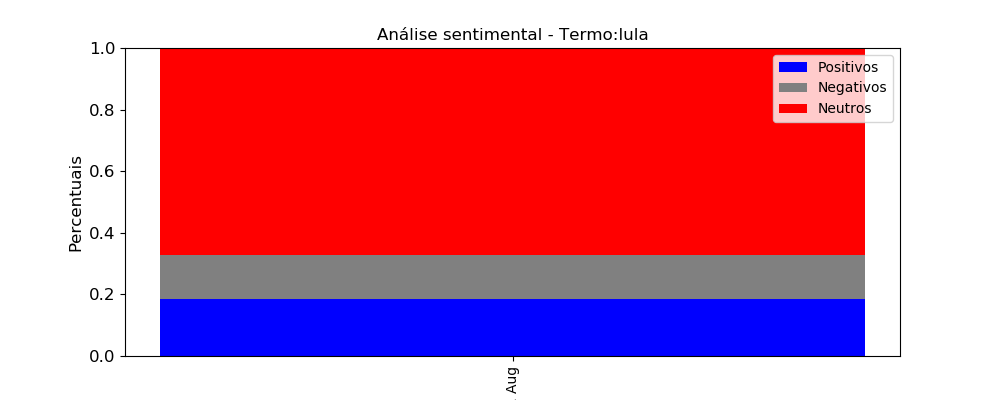
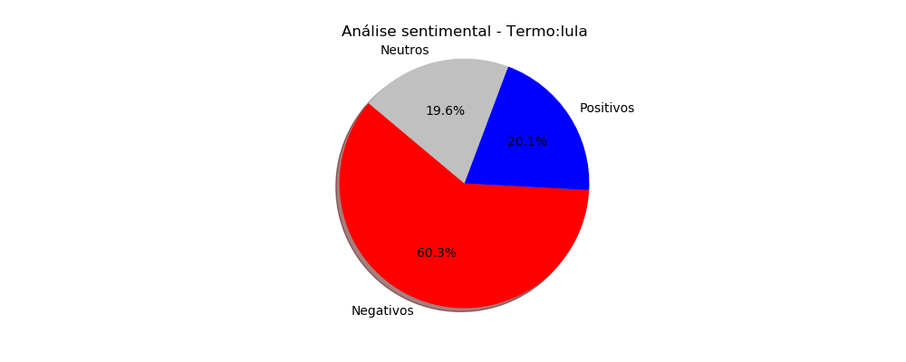
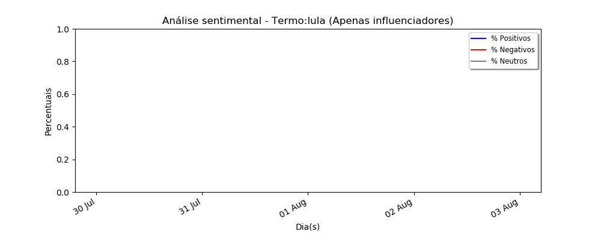
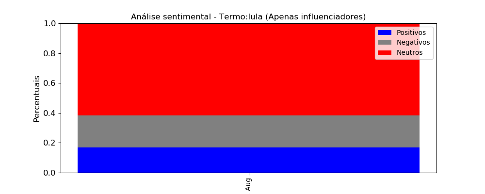

Gráfico de Sentimento em linha
*Os valores aqui apresentados estão considerando TODAS as interações
  Dados de Origem
| Data | Negativos | Neutros | Positivos | %Negativos | %Positivos | %Neutros | |
|---|---|---|---|---|---|---|---|
| 0 | 2018-08-01 | 3097 | 664 | 855 | 67.09 | 18.52 | 14.38 |
Totalizadores
| Negativos | Neutros | Positivos | %Negativos | %Positivos | %Neutros | |
|---|---|---|---|---|---|---|
| count | 1.00 | 1.00 | 1.00 | 1.00 | 1.00 | 1.00 |
| mean | 3097.00 | 664.00 | 855.00 | 67.09 | 18.52 | 14.38 |
| std | nan | nan | nan | nan | nan | nan |
| min | 3097.00 | 664.00 | 855.00 | 67.09 | 18.52 | 14.38 |
| 25% | 3097.00 | 664.00 | 855.00 | 67.09 | 18.52 | 14.38 |
| 50% | 3097.00 | 664.00 | 855.00 | 67.09 | 18.52 | 14.38 |
| 75% | 3097.00 | 664.00 | 855.00 | 67.09 | 18.52 | 14.38 |
| max | 3097.00 | 664.00 | 855.00 | 67.09 | 18.52 | 14.38 |
Gráfico de Sentimento Linha - Apenas Influenciadores
*Os valores aqui apresentados estão considerando apenas as postagens iniciais para cada termo
 Dados de Origem
| Data | Negativos | Neutros | Positivos | %Negativos | %Positivos | %Neutros | |
|---|---|---|---|---|---|---|---|
| 0 | 2018-08-01 | 736 | 254 | 203 | 61.69 | 17.02 | 21.29 |
Totalizadores
| Negativos | Neutros | Positivos | %Negativos | %Positivos | %Neutros | |
|---|---|---|---|---|---|---|
| count | 1.00 | 1.00 | 1.00 | 1.00 | 1.00 | 1.00 |
| mean | 736.00 | 254.00 | 203.00 | 61.69 | 17.02 | 21.29 |
| std | nan | nan | nan | nan | nan | nan |
| min | 736.00 | 254.00 | 203.00 | 61.69 | 17.02 | 21.29 |
| 25% | 736.00 | 254.00 | 203.00 | 61.69 | 17.02 | 21.29 |
| 50% | 736.00 | 254.00 | 203.00 | 61.69 | 17.02 | 21.29 |
| 75% | 736.00 | 254.00 | 203.00 | 61.69 | 17.02 | 21.29 |
| max | 736.00 | 254.00 | 203.00 | 61.69 | 17.02 | 21.29 |